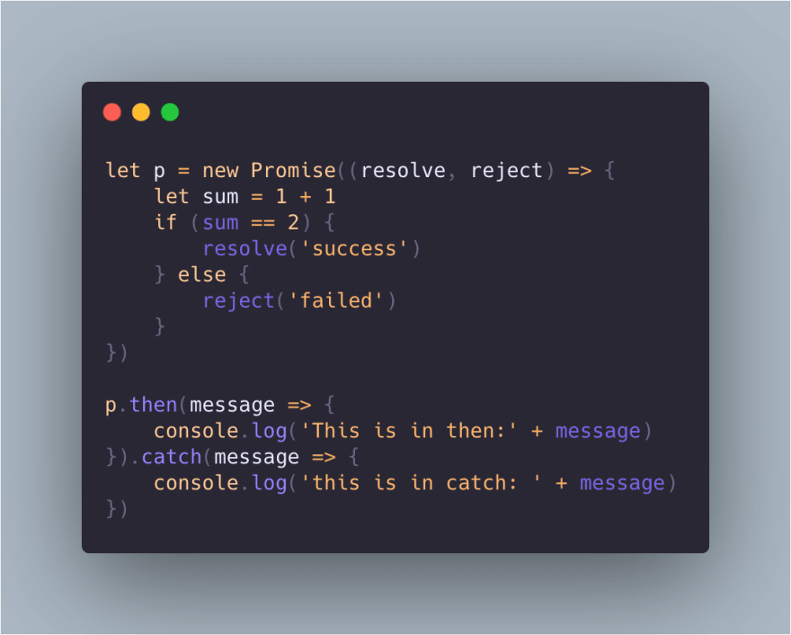
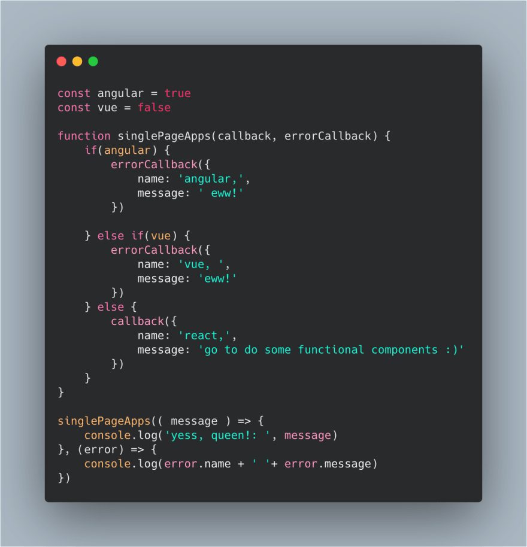
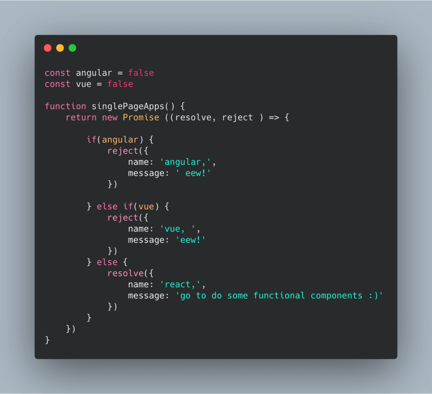
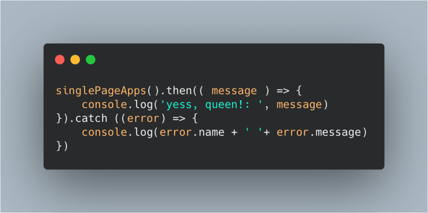
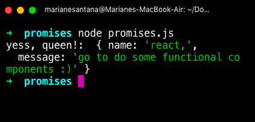
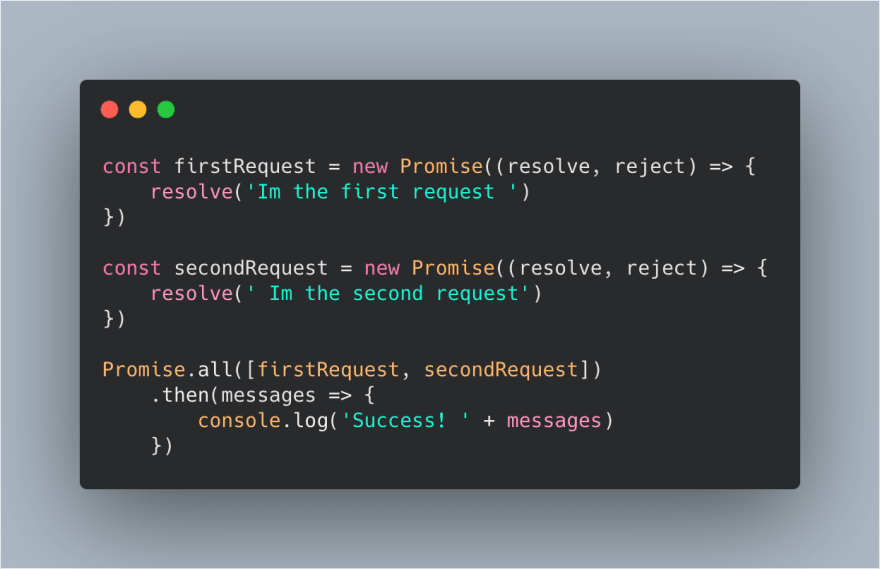

Menu
"Promises"
Basically, Promises were made to create better asynchronous callback functions in Javascript, to make the code better organized. To grasp the concept think like it literally means that we are making a promise in real life. For example:
For that promise, I can do two things:
In code, it's the very same thing. Ok, so let's see this.
The output for this script is: This is in then: success
Here, we have a block inside of a Promise function that sums 1 + 1. If the result is 2, it means that our promise succeded, otherwise, means that our promise was rejected, because 1 + 1 = 2. If we change the number of the sum, we'll be rejected because we're saying that the variable of the sum is 2. If it isn't, promise rejected.
The output for this script is: This is in catch: failed.
Now let's analyze this code
This code sees if you're using Angular or Vue, if one of those is true, it calls a callback
function which sends an
alert with a title and a message.
Output form above example: angular, eww
Now let's change this to a Promise and make this code better.
First, we create a function that instantiates a Promise, passing our parameters resolve and reject. Then, we write the code that we want to be in that Promise, in my case, I want to ensure that developers are using the React lib. So I make the validation and dispatch the action that I want to execute when the promise resolves and when the promise rejects. Like this:
After that, I write the then function calling my Promise and I can do whatever I want in that block. When that Promise is completed, I want to log a message in my console both when I have a resolution or rejection. In the THEN block is the code that runs when my promise is Resolved, and in the CATCH block, the one which runs when my promise is rejected.
 Also, we can make simultaneous Promises using Promise.ALL when we need to make two or more Promises at the same time.
The output is going to be: Success! Im the first request , Im the second request
Or use Promise.RACE if we need to get the result of the first Promise that executes and ignore the upcoming promises.
The output is going to be: Success! Im the first request
Thanks for reading...